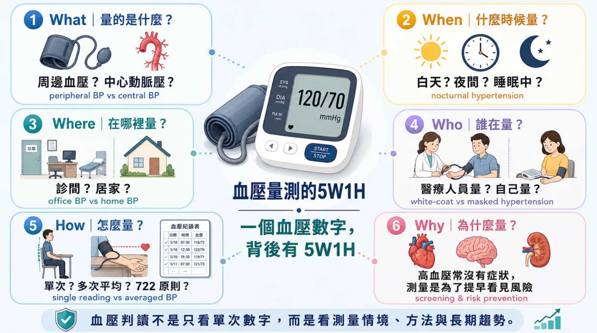
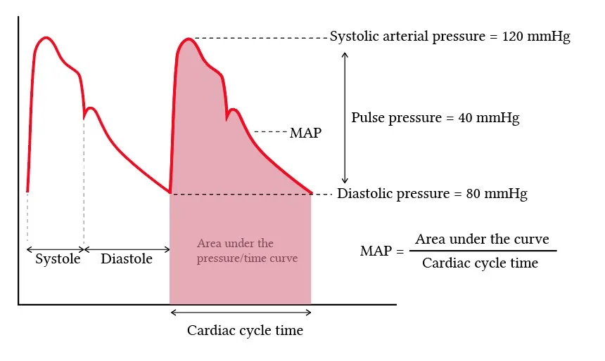
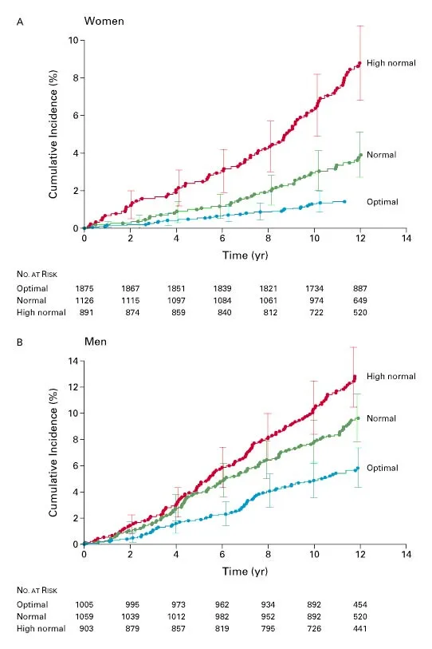
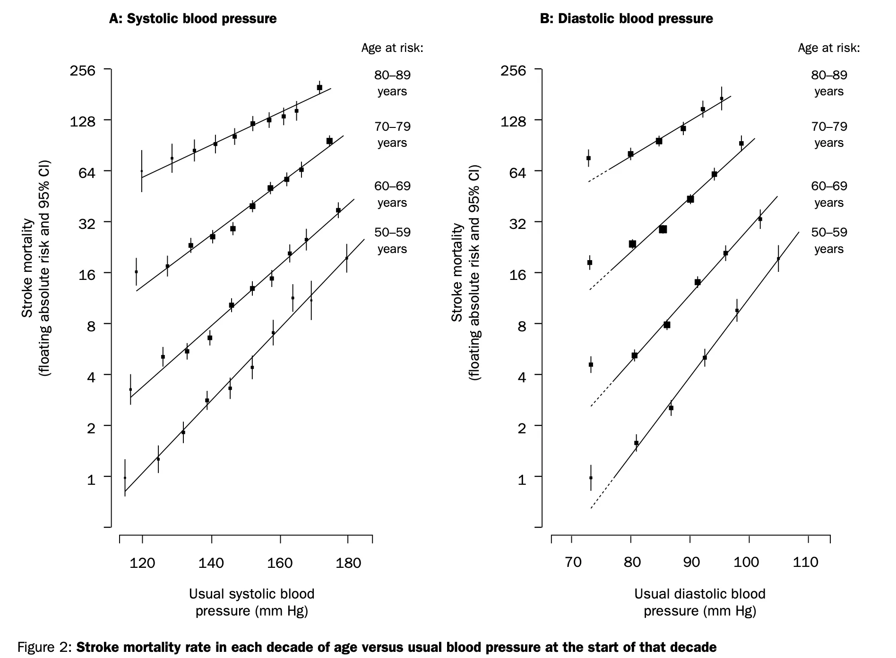

一、量血壓的時候，你有沒有想過這個數字代表什麼？
血壓應該是一般人最容易量到的身體數值之一。只需要將束帶（cuff）纏繞上臂、按下按鈕，等待不到一分鐘，機器就能跳出數字結果；比起需要針扎的血糖，或是需要到醫院抽血檢驗的血脂，都還要容易測量。但是每當束帶放鬆後，機器螢幕跳出的兩個數字到底是什麼意思，您有沒有好奇過？
在進入這兩個數字的含義之前，先想想一件事。我們全身的器官彼此相離甚遠，要能夠得到養分，必須來自心臟將血液泵出，經由遍佈全身的血管深入各組織或器官。
量血壓的結果通常會寫成兩個數字，例如 120/80 mm Hg。前面的 120 是「收縮壓 （systolic blood pressure, SBP）」，後面的 80 是「舒張壓 （diastolic blood pressure, DBP）」。
收縮壓可以想成心臟把血液打出去的那一瞬間，動脈內承受的最高壓力；而舒張壓則是心臟兩次跳動之間、暫時放鬆準備下一次打血時，動脈內仍然維持的壓力。
因此這兩個數值其實是動脈在被觀察的心臟搏動週期中，血壓連續變化的代表著最高和最低的壓力數值。以下圖幫助了解：

二、血壓代表著連續的風險，而不是風險突然飆升的切點
常見一個場景是，您跟親朋好友吃飯時分享了自己的血壓值，一位略懂醫學的好友就說：「啊，你有高血壓欸，要小心餒」。看起來高血壓好像有一個數值，一旦血壓超過這個數值自己就在愁雲慘霧的擔心中，一旦血壓低於這個數值就萬事太平、高枕無憂，真的是這樣嗎？
高血壓有其定義是正確無誤的，歐洲的指引（2023 ESH/ 2024 ESC）訂在 140/90 mm Hg；臺灣（2022 TSOC/THS）和美國（2025 AHA/ACC）則為 130/80 mmHg，一旦收縮壓或舒張壓其中一者超過即成為高血壓（hypertension）。那為何我標題寫「不是切點」呢？
風險隨血壓變化是不存在切點的這句話並不與我們要訂出判定高血壓的切點矛盾，且聽我娓娓道來。
2001年，Dr. Vasan 等人 利用 Framingham Heart Study 發表在 NEJM 的文章首先開始關注同為切點下的血壓值，是否存在長期風險上的差異。研究者比較血壓偏高（130–139/85–89）、正常血壓（120–129/80–84）、理想血壓（<120/80）三群人的10年心血管疾病發生率。結果發現，儘管血壓偏高和血壓正常者未超過切點（140/90），心血管疾病風險仍高於理想血壓者

2002年，Dr. Lewington 等人一項發表在 The Lancet 上的individual participant data meta-analysis，統合了61篇前瞻性研究、納入超過一百萬人、追蹤長達1270萬人年的研究，幾乎可以作為這個立論的錨定點。此研究發現，在中年與老年研究對象中，心血管和全因死亡的風險，至少在血壓低到 115/75 mmHg 之前，沒有看到低於某個血壓後風險就不再下降的門檻。有點拗口，到底什麼意思呢？從 160/100 到 140/90，風險下降；從 140/90 到 130/80，風險還是下降；從 130/80 到 120/75 左右，風險仍然較低。至少到約 115/75 為止，沒有看到風險下降停止的明顯門檻。也就是：在中老年人中，平常血壓越高，血管和全因死亡風險越高；而這種風險增加不是從 140/90 才開始，而是在至少 115/75 以上就呈現連續上升。可以看下面這張圖（中風風險與兩種血壓值）幫助理解：

可見，至少在血壓降到115/75以下前，血壓都是越低越好的。
三、既然血壓風險是連續的，為什麼還會有 130/80 或 140/90？
如果血壓與心血管風險之間是連續關係，而不是到了某一個數字後才突然變危險，那麼接下來很自然會出現一個問題：既然如此，為什麼醫學上還是會訂出 130/80 或 140/90 mm Hg 這樣的高血壓門檻？
這裡要先釐清一個重要觀念：診斷門檻不是自然界刻好的一條線，而是醫學上為了溝通、追蹤與決策所建立的操作工具。
換句話說，140/90 mm Hg 並不是代表 139/89 完全安全、140/90 突然危險；130/80 mm Hg 也不是代表風險從這一刻才開始出現。這些門檻的存在，是因為臨床醫療不能只停留在「風險是連續的」這句話。醫師與病人仍然需要知道：什麼時候應該更密切追蹤？什麼時候應該開始認真調整生活型態？什麼時候需要評估是否使用藥物？公共衛生系統也需要一個相對清楚的標準，才能進行篩檢、統計、治療建議與資源配置。
過去很長一段時間，140/90 mm Hg 是最常被使用的高血壓診斷門檻。2003 年的 JNC 7 指引便採用這個標準，同時提出「前高血壓」的概念，將收縮壓 120–139 mm Hg 或舒張壓 80–89 mm Hg 的族群標示出來。這其實已經隱含一個重要訊息：即使還沒有達到傳統高血壓的門檻，血壓偏高的人也不應該被視為完全沒有風險。
後來，越來越多研究讓醫學界重新思考這條線應該放在哪裡。特別是2015發表在 NEJM 上的 SPRINT 試驗，將高心血管風險、但沒有糖尿病的成人隨機分配到較積極的收縮壓控制目標，或較標準的控制目標。結果顯示，較積極控制血壓可以降低主要心血管事件與全因死亡率。這項研究成為後續美國高血壓指引下修門檻的重要證據之一。
不過，這並不代表血壓目標愈低就一定愈好。SPRINT 試驗中，積極控制血壓雖然帶來心血管效益，但也伴隨較多低血壓、昏厥、電解質異常與急性腎損傷等不良事件。此外，SPRINT 使用的是標準化自動診間血壓量測，與一般門診匆忙量到的血壓不完全相同。因此，直接把試驗中的數字套用到所有臨床情境，也需要謹慎。
這也是為什麼不同指引對同一批證據，可能會做出不同判斷。美國 ACC/AHA 指引在2017時將高血壓定義下修到 130/80 mm Hg，2025的指引也維持這個標準，希望更早辨認風險較高的族群，並透過生活型態或必要時藥物治療降低長期風險。相對地，歐洲2024的指引仍較傾向保留 140/90 mm Hg 作為診間高血壓的主要診斷門檻，但也並非認為 130–139 mm Hg 完全不重要，而是更強調整體心血管風險、器官損傷、共病狀態與治療效益之間的平衡。歐洲這份指引也引入了一個新分類——elevated blood pressure（120–139/70–89 mmHg），概念上和美國的 Stage 1 高血壓非常接近。同時將多數受治療患者的收縮壓治療目標設為 120–129 mmHg，比舊版歐洲指引積極很多。
台灣的情況又更值得注意。2022 年台灣高血壓指引採用 130/80 mm Hg 作為高血壓定義，並特別強調居家血壓測量的重要性。這不只是單純跟隨美國標準，也與亞洲族群的流行病學資料有關。過去亞太地區的世代研究顯示，在相同血壓上升幅度下，亞洲族群的中風與心血管風險負擔相當明顯，因此台灣指引選擇較早辨認風險，也有其在地脈絡。
所以，130/80 和 140/90 的差異，不應該被理解成「誰對誰錯」。更精確地說，這反映了不同醫學社群在解讀證據時，對早期辨認、治療效益、副作用、醫療資源與過度醫療化風險之間，做出了不同取捨。
因此，血壓門檻的真正意義，不是告訴我們「風險從哪一個數字才開始」，而是提醒我們：當血壓到達某個範圍時，應該開始更有系統地評估與行動。對有些人來說，這個行動可能是改善飲食、增加運動、減少鹽分、控制體重與規律居家量測；對另一些整體心血管風險較高的人來說，則可能需要和醫師討論是否使用藥物治療。
門檻不是風險的開關，而是醫療決策的起點。
四、同樣的血壓數字，量法不同，意義也不同：血壓測量的 5W1H
前面談到，血壓門檻和絕對數值都是幫助我們做臨床判斷的工具。但在真正判讀血壓時，還有另一個重要的問題：這個血壓數字是怎麼來的？
很多人對自己的血壓印象，來自健康檢查或門診中量到的一次數字。然而，血壓並不是固定不動的數值，它會受到情緒、睡眠、運動、疼痛、藥物、測量姿勢與測量環境影響。也因此，同樣一個人，在不同地點或是不同時間點量到的血壓，將不盡相同。
因此，我想用一個量血壓的 5W1H來整理這件事。讀懂一個血壓數字，不只要問它有沒有超過 130/80 或 140/90，也要問：What, When, Where, Who, Why, How？

What：量的是什麼？
我們平常在診間或家中量到的，多半是上臂的動脈壓，也就是所謂的周邊血壓（peripheral BP）。這是目前臨床與居家照護最常使用、也最容易取得的血壓數字。
但從血流動力學的角度來看，人體內不同位置的血壓並不完全相同。距離心臟較近的中心動脈壓，可能更直接反映心臟、大腦、腎臟等重要器官所承受的壓力負荷。因此，中心動脈壓與終器官損傷之間的關係，是近年高血壓研究中很活躍的方向。
不過，對一般民眾來說，現階段最重要的不是追求更複雜的檢查，而是先理解：我們平常看到的血壓數字，主要是上臂周邊血壓。它非常重要，但它仍然只是整個血壓現象的一個測量窗口。
When：什麼時候量？
血壓有日夜變化。一般來說，人在睡眠時血壓會下降，清晨醒來後再逐漸上升。但有些人夜間血壓仍然偏高，或是睡眠時血壓沒有如預期下降，［這些型態可能和較高的心血管風險有關］。
這也是為什麼 24 小時動態血壓監測有其價值。它不只看白天或診間的一次血壓，而是觀察一整天、甚至睡眠中的血壓變化。對某些人來說，白天看起來還好，真正的問題可能藏在夜間血壓或清晨血壓中。
換句話說，同樣是 130 mm Hg，早上量到、晚上量到、睡眠中量到，背後的意義可能不完全一樣。血壓不是只存在於診間那幾分鐘，而是跟著一天的生活節奏持續波動。
Where：在哪裡量？
血壓在哪裡量，也很重要。診間血壓是醫療決策中很常見的資料，但它不一定完全代表一個人在日常生活中的血壓狀態。
相較之下，居家血壓有幾個優點。第一，它比較接近日常生活情境，較少受到診間環境與看診壓力影響。第二，它可以重複測量，不必只依賴單次結果。第三，它可以幫助我們看見長期趨勢，而不是只看某一天、某一刻的數字。
這也是為什麼許多研究與指引越來越重視居家血壓。過去包含日本大迫研究等世代研究在內的資料顯示，居家血壓對死亡與心血管結果的預測能力，可能比單次篩檢或診間血壓更接近真實風險。後續的系統性回顧與統合分析也支持，居家血壓在預測心血管事件與高血壓相關器官損傷上，通常比一般診間血壓更有參考價值。
這並不是說診間血壓沒有用，而是單看診間一次血壓值可能會缺乏某些面向的理解。真正重要的是把診間血壓與居家血壓放在一起理解。
Who：誰量的？
「誰在量血壓」也會影響結果。由醫師、護理師或醫療人員在診間量到的血壓，和自己在家中規律量到的血壓，可能透露出不同訊息。
最典型的例子是白袍高血壓。白袍高血壓指的是，在診間或醫療環境中量到的血壓偏高，但在家中或日常生活中量到的血壓相對正常。這可能和看診時的緊張、壓力或環境刺激有關。白袍高血壓不代表完全沒有風險，但它提醒我們：不能只憑一次診間血壓，就急著對一個人下結論。
另一種剛好相反的情況，稱為隱藏性高血壓（masked hypertension）。這類人的診間血壓看起來正常，但在家中或日常生活中的血壓卻偏高。隱藏性高血壓特別容易被忽略，因為如果只看門診量到的數字，可能會讓人誤以為血壓沒有問題。
所以，「誰量的」背後其實問的是：這個數字是在醫療環境中被量到，還是在日常生活中被量到？兩者的差異，可能正是白袍高血壓與隱藏性高血壓被辨認出來的關鍵。
How：怎麼量？
血壓也不是量一次就算數。測量姿勢、束帶大小、手臂位置、是否休息足夠、是否剛運動或喝咖啡，都可能影響結果。
台灣 2022 年高血壓指引特別強調居家血壓的「722 原則」：連續量 7 天、每天早晚各量一次、每次量 2 次。透過多天、多次的紀錄，才比較能看見一個人真正的血壓趨勢，而不是被某一次特別高或特別低的數字影響判斷。
這個概念其實很重要：臨床上真正有意義的，往往不是某一次突然跳高的血壓，而是在標準化測量下，反覆出現的平均血壓水準。單次數字可以提醒我們注意，但多次平均才更接近風險判斷。
Why：為什麼要量？
最後，我們也要問：為什麼要量血壓？
很多人會以為，量血壓是因為頭暈、頭痛、肩頸緊或身體不舒服。但高血壓之所以被稱為重要的公共衛生問題，正是因為它常常沒有明顯症狀。許多人在血壓偏高時並不會有特殊感覺，卻可能在多年後逐漸累積成中風、心臟病、心臟衰竭、腎臟病或其他血管疾病的風險。
因此，量血壓的目的，不只是解釋今天有沒有不舒服，而是提早看見長期風險。它是一種篩檢，也是一種追蹤，更是一種讓我們有機會提早行動的工具。
換句話說，血壓判讀不是只看單次數字，而是要把數字放回它的脈絡中：量的是什麼、什麼時候量、在哪裡量、誰量的、怎麼量，以及為什麼要量。
一個血壓量測值，背後其實有一整套 5W1H。
五、看到不同血壓值，醫師可能會怎麼做？以台灣指引為例
談完血壓的風險、門檻與量測意義後，我們回到一個實際的問題：醫師可能會怎麼判斷你的血壓數值？
以目前台灣高血壓指引為例，血壓大致可以分成幾個範圍：正常血壓、血壓偏高、第一級高血壓與第二級高血壓。這些分類不是為了讓民眾自己在家診斷或自行用藥，而是幫助醫師與病人一起討論下一步：要不要更密切追蹤？要不要調整生活型態？是否需要評估整體心血管風險？是否已經到了需要藥物治療的程度？
如果血壓低於 120/80 mm Hg，通常代表目前血壓處在較理想的範圍。這時候重點不是治療，而是維持健康生活型態，並且定期追蹤。血壓正常不代表未來永遠不會升高，而是提醒我們：現在做得好的事情，值得繼續維持。
如果收縮壓落在 120–129 mm Hg，而舒張壓仍低於 80 mm Hg，則屬於血壓偏高。這個階段通常還不是高血壓，但已經是早期提醒。醫師可能會建議開始規律居家量測，觀察血壓是否持續往上，也會提醒飲食、鹽分、運動、體重、睡眠與酒精等生活型態因素。這時候的重點不是製造焦慮，而是趁風險還早的時候，把血壓趨勢拉回來。
如果收縮壓來到 130–139 mm Hg，或舒張壓 80–89 mm Hg，則進入第一級高血壓的範圍。不過，這不代表每個人都會立刻需要吃藥。醫師通常會先確認這個血壓是不是在正確方式下反覆出現，例如是否符合居家血壓 722 原則、是否只是單次診間偏高，以及有沒有白袍高血壓或隱藏性高血壓的可能。接著，醫師也會利用一些工具評估這個人的整體風險，如常用的是AHA提出的PREVENT公式，裡面考量了：年齡、血脂、抽菸、糖尿病、慢性腎臟病、是否已有心血管疾病，或是否已有高血壓造成的器官影響。
也就是說，同樣是 132/84 mm Hg，對不同人可能代表不同的下一步。對風險較低、沒有明顯器官損傷的人，可能會先從生活型態調整與規律居家血壓追蹤開始；但對已經有糖尿病、慢性腎臟病、心血管疾病，或整體風險較高的人，醫師就可能較早討論藥物治療。
如果血壓達到 140/90 mm Hg 以上，則屬於第二級高血壓。這時候血壓已經明顯偏高，醫師通常會更積極確認診斷，並評估是否需要開始藥物治療。若血壓高出目標很多，有些情況下也可能一開始就需要合併使用不同種類的降血壓藥物，以更穩定地達到控制目標。
因此，血壓門檻真正的功能，不是把人簡單分成「安全」與「危險」兩類，而是幫助我們做出下一步決策。血壓偏高時，可能需要的是追蹤；第一級高血壓時，可能需要的是更完整的風險評估；第二級高血壓時，則通常需要更積極的醫療處理。
至於飲食、減鹽、運動、體重控制、酒精、睡眠與壓力管理，如何實際影響血壓，值得另寫一篇文章仔細討論。這裡先記住：看到血壓數字時，不要只問有沒有超過某條線，而是要問：
這個數字是否量得準？是否反覆出現？我的整體心血管風險如何？下一步應該和醫師討論什麼？
六、回到健康檢查：我們應該如何看待自己的血壓
讀到這裡，你大概已經發現，「血壓多少算正常」這個問題，遠比一張對照表複雜得多。風險是連續的、門檻是醫療系統用來做決策的工具、同一個數字在不同情境下量出來意義不同，而醫師看到數字後，還會疊上一層整體風險評估，才知道下一步該怎麼走。
還有一個常被忽略的角度，值得放進這篇文章的尾聲：為什麼我們整個社會都要在乎「血壓偏高」這群人，而不是只在乎那些已經確診高血壓的人？
流行病學家 Geoffrey Rose 在 1985 年發表的經典觀察提到，一個族群裡，大多數疾病事件其實不是發生在那一小群「高風險」的人身上，而是發生在人數龐大、風險中等的多數人身上——因為人數的優勢遠遠超過個人風險的差異。把這個概念放回血壓的脈絡：全人口的中風與心臟病負擔，有相當一部分其實是由「血壓偏高」、還沒達到高血壓門檻的這群人所貢獻的，不是因為他們個人風險特別高，而是因為這群人數量遠遠超過真正符合高血壓診斷的少數人。這也是為什麼，即使你的健檢報告只顯示「臨界」或「偏高」，這仍然值得認真看待。
回到健康檢查報告本身，幾個實際的提醒，留給每天面對這串數字的你：第一，單次數字不等於診斷，尤其是診間量到的單次偏高，更不該直接拿來下結論；第二，居家血壓值得認真執行，722 原則不是繁瑣的儀式，而是讓你看見真正的血壓軌跡；第三，任何用藥或治療上的調整，都應該與醫師討論，這篇文章談的是怎麼理解數字，而不是取代臨床判斷。
七、結語
量血壓的時候，你在意的應該不只是「這個數字有沒有超過某條線」，而是一整套更完整的理解——這個數字是怎麼量出來的、它在你的生命歷程裡代表什麼樣的軌跡、以及它跟你的整體心血管風險如何疊加在一起。
血壓從來不是一個用來嚇自己或安慰自己的單一數字，而是一段持續累積的生命軌跡。看懂它，才有機會真正照顧好自己。